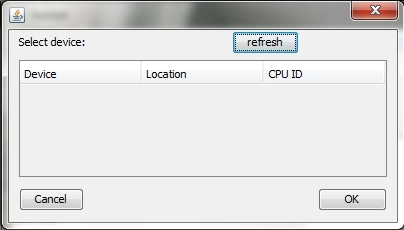

Here are the 2 screens
{kind=link}

I'm not sure how to add jpg's. Is it upload?

hi - are you simply clicking the Reinstall WCID Driver button or on the right side of the button to select INSTALL DRIVER in the dropdown? you should be clicking the latter.
hmm, Im a bit puzzled... as Zadig can see it.
lets try the following.... lets switch it to the libusb driver, to do this:
(id also at this point, just to eliminate possible conflicts by unplugging other USB devices you have attached, and directly plug in Axoloti to your PC, not via a hub... just to start eliminating any other possibilities)
Im assuming you have installed Axoloti 1.0, and the associated runtime (not one of the pre-release versions)
the other thing we could test, is to see if the board is correctly loading in DFU mode (=Rescue mode)
this is detailed in the 'Advanced Installation' section in the Installation on Windows.
I don't think this is necessary, as Axoloti is being seen generally by windows, but it may prove interesting, to see if we can connect to it in this mode. this would open up the option of us installing the 1.0 firmware on, and the deleting the 'offending' registry keys.
but lets see if libusb works first, to prevent this registry hacking.
Sorted the problem!
Its my weird Dell Laptop (XPS). When I plug into the 'main' USB port Axoloti works fine. Its not a power issue as plugging a 5v supply makes no difference.
I have the same issue with my audio interface (Tascam US800).
Problem is the Axoloti and the Tascam need the same USB port.
Time to get a new PC I feel............
cool, great to hear (perhaps not for you  ) , but means we don't have a general issue
) , but means we don't have a general issue 
if your having issues with a few devices, yeahs its possibly time for a change...
one thing you could try, is using a different usb hub, as they are 'not all equal',
I'd recommend a USB 2.0 powered MTT hub, I use a this one Pluggable MTT Hub, the important thing is it support MTT, which unfortunately is not often stated. (this one uses the Terminus FE1.1SB chipset which has MTT)
It may or may not solve the problem, as we don't know what the issue with the hub is... but its a useful hub to have around anyway when dealing with multiple USB 1.x devices (I got it due to my Virus, and have been very happy with it)
(Just to be clear to others, we have no reported issues with using hubs etc, this issue sounds it could be a 'one-off', but we will monitor)
Anyway, really glad to hear, that you are up and running with Axoloti, and can start exploring its depths ... enjoy 
Apparently Windows Update does not provide the driver on XP, Vista and Windows 7.
Use winusbcompat.zip, which I added here: https://github.com/axoloti/axoloti/releases
Extract, and point windows to the extracted location when it asks for a driver after plugging in.
Windows 8 and later do not need it.
Hi
I have the same problem but nothing to do...
I have Windows 7 32 bits
Axoliti program is intalled to C:\Program Files\Axoloti
Runtime is installed to C:\Program Files\axoloti_runtime\platform_win
Axoliti program start but message is "No available USB device found with matching PID/VID
search path : objects
finished loading objects"
When I plug my board (I tried on powered USB hub and directly PC desktop each time, and all USB devices unpluged) , red and green LED flashed but Windows doesn't see it. Zadig doesn't see it too.
After I tried to plug in DFU mode, with S1, no LED lightning, Windows doesn't see it. Zadig doesn't see it too...
There is another way to update firmware ? (I have STK500 v1 and Pocket AVR Programmer from Spakfun)
Could you try a different USB cable?
Does the green LED stay on and the red LED stay off after blinking?
There is no AVR on Axoloti, STK500 or pocket AVR won't do anything.
Wow !!!
I tried with another USB cable, I bougth it at the same time of the first one and now, Axoliti Core works !!!
I don't know why because the first one works with my smartphone, I try it again with Axoliti Core, it doesn't work ???
Update is good too with Axoliti app
Thanks to you for your very quick reply 
You'd be surprised how many times there are faulty cables...
One thing, (actually I will add this to FAQ), its VERY common that microUSB cables you have knocking around the house, are charging cables only... this is because, these are often supplied with phones etc. that don't need data, but need power.
(first time I plugged in Axoloti I had exactly this problem, as Id unknowingly used a cable I used for my PI2 for power)
With bad USB cable, after red and green blinking, green LED doesn't stay on, with good cable, green LED stay on.
Thanks again
Hi,
I had the same problems (and the same OS configuration) here, and I used the USB cables received with my two Axoloti Core boards.
I'll try to substitute the cables, but...
The issue with @1_over_f_noise's setup was caused by an old driver on a USB 3.0 Host Controller by Renesas (those are quite rare), and resolved by upgrading the host controller driver. The symptoms: everything looking fine in device manager, but no detection of the presence of a board at all in the Axoloti software.
Thanks @1_over_f_noise for nailing the cause!
I can't get it working on win7 here, in device manager the Axoloti is showing up under "Sound video and game controllers" when I launch the editor I get the Firmware ID showing and in the text box I get:
USB device found
not accesseable : driver not installed
USB device found
not accesseable : driver not installed
No available USB device found with matching PID/VID
I opened Zadig and it is showing up there as "Axoloti Bulk Interface (Interface2)" and driver is shown as "WinUSB (v6.1.7600.16385)"
I have tried another USB port (both on my laptop, no hubs) I have tried removing in device manager and re-installing. I have also tried 3 different USB cables.
I noticed once when re-installing the driver after removing it that the Axoloti appeared under "Universal Serial Bus Devices" as "Axoloti" and was not in the "Sound video and game controllers" anymore. I have since re-installed again and it is back there now.
Any ideas? This is doing my head in, wasted 2 evenings that should have been spent making noises instead on swearing at my laptop
Thanks
Tried again then did the exact procedure in the second post of this thread and it now works 
I have the same problem on a Lenovo w520 Axoloti-core runs fine in linux 64 bits.
However, in Windows 7 64bits with same cables and setup it doesn't connect.
So I updated the usb 3.0 host controller but nothing changed.
Axoloti 1.0.10-0gf8e51d-dirty message: No available USB device found with matching PID/VID
Solved, after renesas USB3.0 Host driver update, the Zadig WinUSB one click solution in comment #2 and a reboot.
Axoloti boards now working in Linux Elementary Freya 64bits and Windows 7 64bits
i am experiencing the very same issues as at the start of the topic, but i can't seem to install the driver (without WCID) 
os: newly installed win 7 pro x64 (installed all updates upto today)
it always detects it as a device with WCID, and axoloti can't find the device (No available USB device found with matching PID/VID)
any suggestion what i could do? (i tried every driver provided by Zadig)
even device in DFU mode is recognized by windows, but not by axoloti...
EDIT: problem solved, the problem had to do with usb ports. i've put it in another port and it suddenly worked